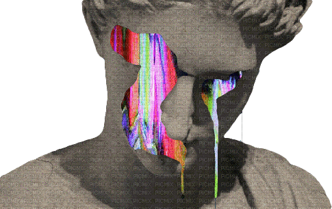

What is Vaporwave?

Vaporwave is a microgenre of electronic music, a visual art style, and an Internet meme that emerged in the early 2010s.
It is defined partly by its slowed-down, chopped and screwed samples of smooth jazz, elevator, R&B, and lounge music from the 1980s and 1990s.
The surrounding subculture is sometimes associated with an ambiguous or satirical take on consumer capitalism and pop culture, and tends to be characterized by a nostalgic or surrealist engagement with the popular entertainment, technology and advertising of previous decades.
Visually, it incorporates early Internet imagery, late 1990s web design, glitch art, anime, 3D-rendered objects, and cyberpunk tropes in its cover artwork and music videos.
Test
London is the capital city of England. It is the most populous city in the United Kingdom, with a metropolitan area of over 13 million inhabitants.
Standing on the River Thames, London has been a major settlement for two millennia, its history going back to its founding by the Romans, who named it Londinium.